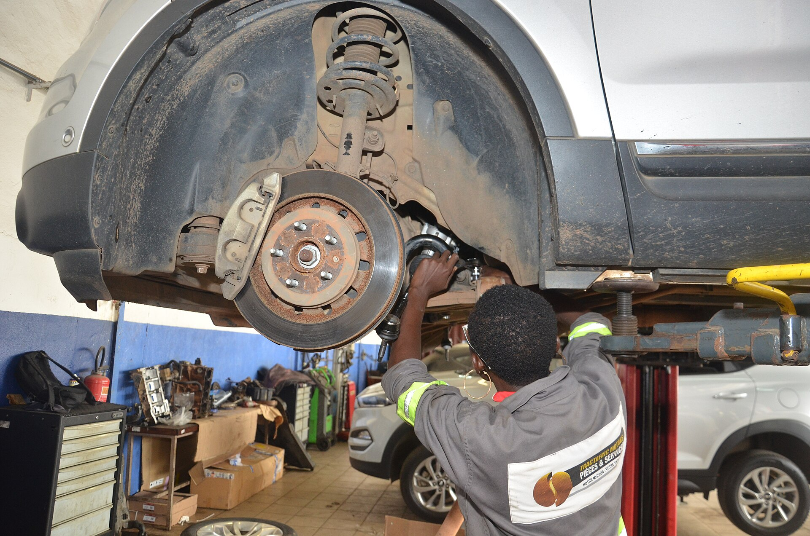
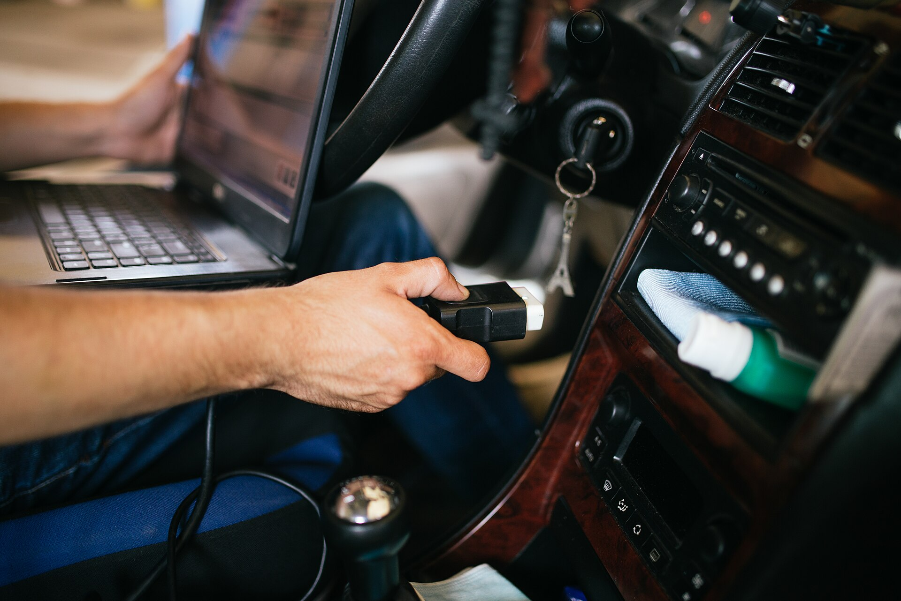
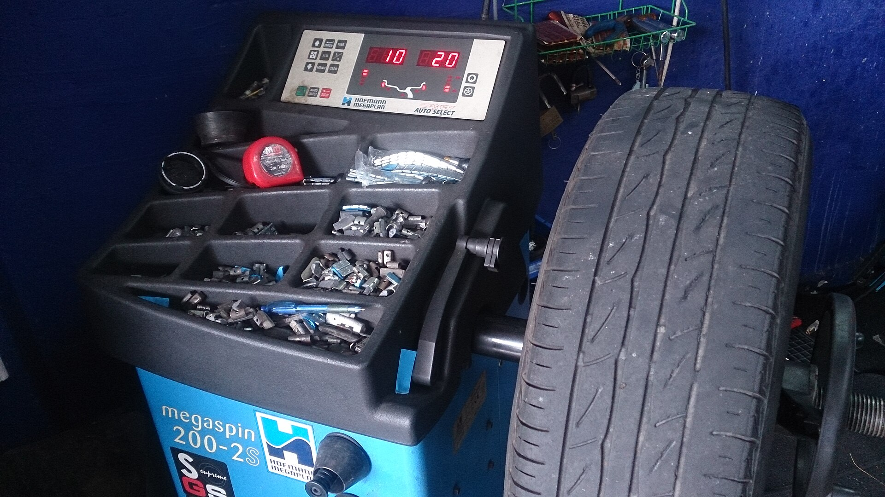
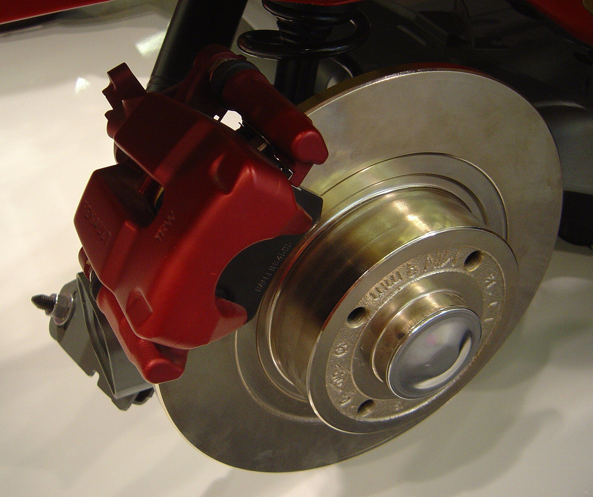

VELTOR AUTO начинался в 2018 году с двух постов и одного принципа: клиент должен понимать, за что платит. Восемь лет спустя сохранили этот принцип — только добавили к нему оборудование и гарантию.
Как всё началось
От гаража на две машины — к четырём постам
Первые полгода мы чинили подвеску на двух подъёмниках и по вечерам писали протоколы осмотра от руки. Клиенты приходили по сарафанному радио: «там объяснят и не наврут». С тех пор открыли стенд сход-развала, тормозной пост и пост электрики, но подход остался прежним: диагноз — до ремонта, смета — до работ, отчёт — после.
Команда на связи
В смене одновременно работают 4–6 мастеров, у каждого — своя специализация и свой набор инструментов. Запчасти держим на складе по ходовым позициям, редкое — привозим к вашему визиту. Все сервисные книги, протоколы и фотоотчёты отдаём вам на руки, без «внутреннего архива».
01
Диагноз до ремонта
Не открываем «что найдём» — сначала обследование с фотофиксацией, потом смета и решение за вами.
02
Без навязывания
Ремонтируем то, что реально влияет на безопасность и ресурс. Остальное помечаем в протоколе «под наблюдение».
03
Момент затяжки
Каждое соединение — динамометрическим ключом по нормативу производителя. Это мелочь, которая решает всё.
04
Бумажная гарантия
6 месяцев на работы — в письменном виде. Если что-то пошло не так по нашей вине — переустанавливаем бесплатно.
VT·Люди
Кто работает с вашей машиной
Команда — вымышленные персонажи демо-сайта; сходства с реальными мастерскими случайны.
АК
Владелец · диагностика
Артём Корнеев
Основатель. Пятнадцать лет в автомобильной электронике и лектор на курсах автодиагностики.
МЛ
Подвеска · сход-развал
Марк Латышев
Тяги, рычаги и стойки — его приоритет. Настройки развала делает по протоколам завода, а не «на глаз».
ДГ
Тормозные системы
Дина Гарипова
Специалист по тормозам: суппорты, диски и АБС-модули. Раньше работала на гоночной команде.
ЕВ
ТО и электрика
Егор Вафин
Масла, фильтры, АКБ и генераторы. Человек, который заметит подтёк раньше, чем тот станет течью.
VT·Работа
Внутри мастерской
Фотографии — Wikimedia Commons под свободными лицензиями; это честные рабочие процессы, а не стоковые постановки.

G·01 — осмотр подвески

G·02 — читалка ошибок

G·03 — балансировка колеса

G·04 — тормозной суппорт
Слово владельца
«Ремонт — это не героизм. Это точность: правильный диагноз, правильный момент затяжки и никаких лишних деталей в смете».
Артём Корнеев · владелец VELTOR AUTO
VT·Факты
Мастерская в цифрах
0лет в одном месте
0услуг в каталоге
0гарантия на работы
показатели демонстрационные · реальные цифры узнавайте по телефону
VT·FAQ
Частые вопросы
Шесть месяцев или 10 000 км — что наступит раньше. Гарантия письменная, распространяется на работу мастера. Что можно и что нельзя по гарантии — оговариваем в чеке до оплаты.
Да. Мы поставим ваши детали, если они исправны и подходят по VIN. На чужие запчасти гарантии нет — только на нашу работу. Сомнительно выглядящие детали предупредим, но вправе отказать.
Диагностика — 30–40 минут, замена пары амортизаторов с опорами — 2–4 часа, сход-развал — ещё 40–50 минут. Итого типовой день: утром приехали, вечером забрали.
Не лучше — мы другие. У дилера контракт с заводом и регламент, у нас — время и причина. Мы не требуем «заменить по регламенту» то, что ещё исправно, а дилер не всегда готов отступить от регламента.
Всегда. Если при разборке видим проблему сверх сметы — останавливаемся, фотографируем, звоним вам и ждём решения. Без звонка ни одна дополнительная деталь не откручивается.